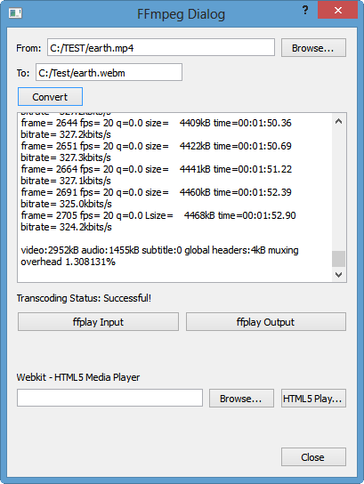

FFmpeg Webcam Video Capture
- 2017
FFmpeg can take input from Directshow devices on our windows computer. So, we're going to use the dshow FFmpeg input source.
We can check what devices are available on our machine using the following command:
ffmpeg -list_devices true -f dshow -i dummy
Then, it will display the list:
C:\TEST>ffmpeg -list_devices true -f dshow -i dummy ffmpeg version N-56827-g64327aa Copyright (c) 2000-2013 the FFmpeg developers built on Oct 2 2013 18:07:56 with gcc 4.8.1 (GCC) configuration: --enable-gpl --enable-version3 --disable-w32threads --enable-avi .... libavutil 52. 46.100 / 52. 46.100 libavcodec 55. 33.101 / 55. 33.101 libavformat 55. 19.100 / 55. 19.100 libavdevice 55. 3.100 / 55. 3.100 libavfilter 3. 88.100 / 3. 88.100 libswscale 2. 5.100 / 2. 5.100 libswresample 0. 17.103 / 0. 17.103 libpostproc 52. 3.100 / 52. 3.100 [dshow @ 0000000003ba21c0] DirectShow video devices [dshow @ 0000000003ba21c0] "HP Truevision HD" [dshow @ 0000000003ba21c0] DirectShow audio devices [dshow @ 0000000003ba21c0] "Microphone (Realtek High Definition Audio)" [dshow @ 0000000003ba21c0] "Stereo Mix (Realtek High Definition Audio)" dummy: Immediate exit requested
We may also need to give our devices certain parameters such as size or frame rate etc. Sometimes the frames may be dropped because ffmpeg wants to keep up the the real time input. We can control by give the proper parameters. So, we need to get more information about the device by using this command:
ffmpeg -f dshow -list_options true -i video="HP Truevision HD"
Note that I used the device name I got from earlier query. Also, note the video format setting parameter -f comes before of -i to indicate it's an input.
Now, we get from the command:
C:\TEST>ffmpeg -f dshow -list_options true -i video="HP Truevision HD" ffmpeg version N-56827-g64327aa Copyright (c) 2000-2013 the FFmpeg developers built on Oct 2 2013 18:07:56 with gcc 4.8.1 (GCC) configuration: --enable-gpl --enable-version3 --disable-w32threads --enable-avisynth --enable- ... [dshow @ 000000000034cbc0] DirectShow video device options [dshow @ 000000000034cbc0] Pin "Capture" [dshow @ 000000000034cbc0] pixel_format=yuyv422 min s=640x480 fps=30 max s=640x480 fps=30 [dshow @ 000000000034cbc0] pixel_format=yuyv422 min s=640x480 fps=30 max s=640x480 fps=30 [dshow @ 000000000034cbc0] pixel_format=yuyv422 min s=160x120 fps=30 max s=160x120 fps=30 [dshow @ 000000000034cbc0] pixel_format=yuyv422 min s=160x120 fps=30 max s=160x120 fps=30 [dshow @ 000000000034cbc0] pixel_format=yuyv422 min s=320x240 fps=30 max s=320x240 fps=30 [dshow @ 000000000034cbc0] pixel_format=yuyv422 min s=320x240 fps=30 max s=320x240 fps=30 [dshow @ 000000000034cbc0] pixel_format=yuyv422 min s=1280x720 fps=10 max s=1280x720 fps=10 [dshow @ 000000000034cbc0] pixel_format=yuyv422 min s=1280x720 fps=10 max s=1280x720 fps=10 [dshow @ 000000000034cbc0] vcodec=mjpeg min s=640x480 fps=30 max s=640x480 fps=30 [dshow @ 000000000034cbc0] vcodec=mjpeg min s=640x480 fps=30 max s=640x480 fps=30 [dshow @ 000000000034cbc0] vcodec=mjpeg min s=160x120 fps=30 max s=160x120 fps=30 [dshow @ 000000000034cbc0] vcodec=mjpeg min s=160x120 fps=30 max s=160x120 fps=30 [dshow @ 000000000034cbc0] vcodec=mjpeg min s=320x240 fps=30 max s=320x240 fps=30 [dshow @ 000000000034cbc0] vcodec=mjpeg min s=320x240 fps=30 max s=320x240 fps=30 [dshow @ 000000000034cbc0] vcodec=mjpeg min s=1280x720 fps=30 max s=1280x720 fps=30 [dshow @ 000000000034cbc0] vcodec=mjpeg min s=1280x720 fps=30 max s=1280x720 fps=30 video=HP Truevision HD: Immediate exit requested
Now, we're ready to receive video stream from our webcam.
Let's do it using the command below;
ffmpeg -f dshow -s 320x240 -r 30 -vcodec mjpeg -i video="HP Truevision HD" output.mp4
Now' it's doing it:
C:\TEST>ffmpeg -f dshow -s 320x240 -r 30 -vcodec mjpeg -i video="HP Truevision HD" output.mp4
ffmpeg version N-56827-g64327aa Copyright (c) 2000-2013 the FFmpeg developers
built on Oct 2 2013 18:07:56 with gcc 4.8.1 (GCC)
configuration: --enable-gpl --enable-version3 --disable-w32threads --enable-avisynth --enable-bzl
...
Input #0, dshow, from 'video=HP Truevision HD':
Duration: N/A, start: 247157.385000, bitrate: N/A
Stream #0:0: Video: mjpeg, yuvj422p(pc), 320x240, 30 tbr, 10000k tbn, 30 tbc
No pixel format specified, yuvj422p for H.264 encoding chosen.
Use -pix_fmt yuv420p for compatibility with outdated media players.
[libx264 @ 000000000035b300] using cpu capabilities: MMX2 SSE2Slow SSSE3 LZCNT SlowPalignr
[libx264 @ 000000000035b300] profile High 4:2:2, level 1.3, 4:2:2 8-bit
[libx264 @ 000000000035b300] 264 - core 138 r2358 9e941d1 - H.264/MPEG-4 AVC codec - Copyleft 2003-
cabac=1 ref=3 deblock=1:0:0 analyse=0x3:0x113 me=hex subme=7 psy=1 psy_rd=1.00:0.00 mixed_ref=1 me
zone=21,11 fast_pskip=1 chroma_qp_offset=-2 threads=3 lookahead_threads=1 sliced_threads=0 nr=0 dec
tra=0 bframes=3 b_pyramid=2 b_adapt=1 b_bias=0 direct=1 weightb=1 open_gop=0 weightp=2 keyint=250 k
ad=40 rc=crf mbtree=1 crf=23.0 qcomp=0.60 qpmin=0 qpmax=69 qpstep=4 ip_ratio=1.40 aq=1:1.00
Output #0, mp4, to 'output.mp4':
Metadata:
encoder : Lavf55.19.100
Stream #0:0: Video: h264 (libx264) ([33][0][0][0] / 0x0021), yuvj422p, 320x240, q=-1--1, 15360
Stream mapping:
Stream #0:0 -> #0:0 (mjpeg -> libx264)
Press [q] to stop, [?] for help
frame= 537 fps= 26 q=-1.0 Lsize= 575kB time=00:00:17.83 bitrate= 264.0kbits/s
video:568kB audio:0kB subtitle:0 global headers:0kB muxing overhead 1.247320%
[libx264 @ 000000000035b300] frame I:3 Avg QP:23.06 size: 10437
[libx264 @ 000000000035b300] frame P:154 Avg QP:24.92 size: 2370
[libx264 @ 000000000035b300] frame B:380 Avg QP:26.59 size: 485
[libx264 @ 000000000035b300] consecutive B-frames: 0.6% 10.4% 14.5% 74.5%
[libx264 @ 000000000035b300] mb I I16..4: 21.8% 64.7% 13.6%
[libx264 @ 000000000035b300] mb P I16..4: 0.5% 0.1% 0.0% P16..4: 66.0% 13.8% 13.6% 0.0% 0.0%
[libx264 @ 000000000035b300] mb B I16..4: 0.1% 0.1% 0.0% B16..8: 30.4% 0.1% 0.0% direct: 6.
[libx264 @ 000000000035b300] 8x8 transform intra:53.9% inter:71.7%
[libx264 @ 000000000035b300] coded y,uvDC,uvAC intra: 44.5% 99.6% 95.0% inter: 4.0% 45.7% 21.1%
[libx264 @ 000000000035b300] i16 v,h,dc,p: 22% 10% 11% 58%
[libx264 @ 000000000035b300] i8 v,h,dc,ddl,ddr,vr,hd,vl,hu: 17% 16% 33% 3% 7% 6% 7% 4% 7%
[libx264 @ 000000000035b300] i4 v,h,dc,ddl,ddr,vr,hd,vl,hu: 30% 23% 12% 6% 5% 6% 7% 5% 6%
[libx264 @ 000000000035b300] i8c dc,h,v,p: 57% 14% 13% 16%
[libx264 @ 000000000035b300] Weighted P-Frames: Y:0.0% UV:0.0%
[libx264 @ 000000000035b300] ref P L0: 37.1% 7.3% 40.1% 15.4%
[libx264 @ 000000000035b300] ref B L0: 69.6% 25.1% 5.3%
[libx264 @ 000000000035b300] ref B L1: 87.5% 12.5%
[libx264 @ 000000000035b300] kb/s:259.41
C:\TEST>
That's it.
We can take the output.mp4, and play it.
- FFmpeg - the swiss army knife of Internet Streaming - part II
- How to capture a webcam input
- FFmpeg on Windows
The picture is converting mp4 to webm using ffmpeg.
The video recording below is the player built using HTML5 video tag with QWebView as its canvas. Internally, we have two containers: mp4 and ogv, and both are converted from recorded avi. The very converter of this tutorial was used for the conversion.
Tutorial for the code:
FFmpeg on Ubuntu 13.10 is used for the capture.
The commands for capturing video from webcam can be found from How to capture a webcam input.
On Linux, we can use video4linux2 (or shortly v4l2) input device to capture live input (such as web camera).
"Video4Linux or V4L is a video capture and output device API and driver framework for the Linux kernel, supporting many USB webcams, TV tuners, and other devices. Video4Linux is closely integrated with the Linux kernel." - from http://en.wikipedia.org/wiki/Video4Linux
Ok, let's do the capture:
ffmpeg -f video4linux2 -r 25 -s 640x480 -i /dev/video0 out.avior
ffmpeg -f v4l2 -r 25 -s 640x480 -i /dev/video0 out.avi
$ ffmpeg -f video4linux2 -r 25 -s 640x480 -i /dev/video0 out.avi
ffmpeg version git-2013-10-28-d57a6fe Copyright (c) 2000-2013 the FFmpeg developers
built on Oct 28 2013 19:04:44 with gcc 4.8 (Ubuntu/Linaro 4.8.1-10ubuntu8)
configuration: --prefix=/home/khong/ffmpeg_build --extra-ldflags=-L/home/khong/ffmpeg_build/lib --bindir=/home/khong/bin --extra-libs=-ldl --enable-gpl --enable-libfaac --enable-libx264 --enable-libtheora --enable-libvorbis --enable-nonfree
libavutil 52. 48.100 / 52. 48.100
libavcodec 55. 39.100 / 55. 39.100
libavformat 55. 19.104 / 55. 19.104
libavdevice 55. 5.100 / 55. 5.100
libavfilter 3. 90.100 / 3. 90.100
libswscale 2. 5.101 / 2. 5.101
libswresample 0. 17.104 / 0. 17.104
libpostproc 52. 3.100 / 52. 3.100
[video4linux2,v4l2 @ 0x30daa80] The driver changed the time per frame from 1/25 to 1/30
Input #0, video4linux2,v4l2, from '/dev/video0':
Duration: N/A, start: 3868.616725, bitrate: 147456 kb/s
Stream #0:0: Video: rawvideo (YUY2 / 0x32595559), yuyv422, 640x480, 147456 kb/s, 30 fps, 30 tbr, 1000k tbn, 1000k tbc
Output #0, avi, to 'out.avi':
Metadata:
ISFT : Lavf55.19.104
Stream #0:0: Video: mpeg4 (FMP4 / 0x34504D46), yuv420p, 640x480, q=2-31, 200 kb/s, 25 tbn, 25 tbc
Stream mapping:
Stream #0:0 -> #0:0 (rawvideo -> mpeg4)
Press [q] to stop, [?] for help
frame= 10 fps=0.0 q=10.0 size= 93kB time=00:00:00.40 bitrate=1898.2kbits/
frame= 18 fps= 18 q=7.6 size= 106kB time=00:00:00.72 bitrate=1201.4kbits/s
frame= 26 fps= 17 q=7.7 size= 119kB time=00:00:01.04 bitrate= 939.9kbits/s
frame= 34 fps= 17 q=7.6 size= 125kB time=00:00:01.36 bitrate= 755.9kbits/s
frame= 42 fps= 17 q=7.4 size= 138kB time=00:00:01.68 bitrate= 675.1kbits/s
...
After the capture, we can check it by simply playing the video:
$ ffplay out.avi
$ ffplay out.avi
ffplay version git-2013-10-28-d57a6fe Copyright (c) 2003-2013 the FFmpeg developers
built on Oct 28 2013 19:04:44 with gcc 4.8 (Ubuntu/Linaro 4.8.1-10ubuntu8)
configuration: --prefix=/home/khong/ffmpeg_build --extra-ldflags=-L/home/khong/ffmpeg_build/lib --bindir=/home/khong/bin --extra-libs=-ldl --enable-gpl --enable-libfaac --enable-libx264 --enable-libtheora --enable-libvorbis --enable-nonfree
libavutil 52. 48.100 / 52. 48.100
libavcodec 55. 39.100 / 55. 39.100
libavformat 55. 19.104 / 55. 19.104
libavdevice 55. 5.100 / 55. 5.100
libavfilter 3. 90.100 / 3. 90.100
libswscale 2. 5.101 / 2. 5.101
libswresample 0. 17.104 / 0. 17.104
libpostproc 52. 3.100 / 52. 3.100
Input #0, avi, from 'out.avi':= 0KB vq= 0KB sq= 0B f=0/0
Metadata:
encoder : Lavf55.19.104
Duration: 00:00:11.76, start: 0.000000, bitrate: 326 kb/s
Stream #0:0: Video: mpeg4 (Simple Profile) (FMP4 / 0x34504D46), yuv420p, 640x480 [SAR 1:1 DAR 4:3], 25 tbr, 25 tbn, 25 tbc
...
Ph.D. / Golden Gate Ave, San Francisco / Seoul National Univ / Carnegie Mellon / UC Berkeley / DevOps / Deep Learning / Visualization